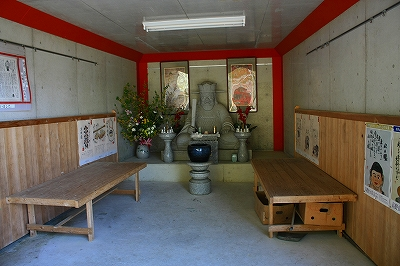

珍寺的篠栗霊場巡り
10番切幡寺＆番外金剛の滝不動明王＆長命薬師堂
さて。珍寺的篠栗霊場巡りもいよいよ最終ステージである。
向かうのは10番の切幡寺。
山の中腹に建つ堂宇はチョット要塞っぽい。こういった圧縮感ムンムンのお寺は結構好きだ。
階段脇にガレージのようなスペースがあるので中を覗いてみる。

おお、閻魔大王ですか。失礼しました。でも壁はコンクリ打ち放しだしやっぱり車庫っぽいぞ。
さて。
階段をのぼり山門を潜り左に折れると地蔵堂がある。
地蔵堂といっても壁はなく屋根だけが架かった場所に大量のお地蔵さんが並んでいるというもの。
真ん中にはお地蔵さん。足元には子供たちが縋っております…
このようなお地蔵さんをたまに見かけるが、いつも「巨人の星」のあのシーンを思い出してしまう。
ホラ、お地蔵さんがマウンドに立つ飛雄馬ね。左手に持っているのはもちろん白球ですよ。で足元にいるのが、佐門豊作の幼い弟妹ね。
飛雄馬に纏わり付いて「兄ちゃんをいじめるな！」の場面ですよ。ま、どうでもいいですか。
お地蔵さんの頭上にはあの世の絵図が３枚掲げられている。
こちらは三途の川の景。閻魔様の裁きも受けずにフライング気味に川原でバーベキュー始めちゃってますね。
あとの2枚は閻魔様の裁きと極楽往生図、ま、いずれもポンチでキュートな絵柄でした。
石像の一画にあった拝むご婦人の像。表情や数珠の仕上がりを見る限り相当の手練が制作したと思われる。

さて、ここで着目したいのはお地蔵さんの石像の配置。
何故か舟形のお地蔵さんの向きが場所ごとにまちまちなので向かい合わせになっていたり背中合わせになっていたり…
何かの法則性がありそな無さそな…
巨大な2大地蔵大陸プレートがせめぎあって賽の河原大地震が起きそうな予感がビンビンですね。
てなわけで本堂へ向かう。
妙にコンパクトな山門に埋め込まれた妙にコンパクトな仁王像の足元にいる邪鬼。コレだけはインパクト大。むんぐぁ。
で、本堂。
なんとなくガチャガチャしていて私好み。
本堂脇には2つの巨大念珠がある。
ひとつは108珠あり煩悩消滅を祈願する念珠、もう一方は篠栗霊場と同数の88珠あって末広がりの開運招念珠。
尚、タイのワットパクナムから仏舎利（お釈迦サマの骨）と釈迦如来像を賜ったとか。
ワットパクナムとはタイの有名なお寺。日本にも別院があり、異彩を放ちまくっている訳だが、仏舎利を惜しげもなく放出しているご様子。
詳しくは「ワットパクナム、仏舎利」などで検索されたし。いかに日本の各地、各宗派に仏舎利を授けているかがわかる。
ちなみに世界中の仏舎利を合計すると確か3トンほどあるとか。
まあ、お釈迦様は4.8メートルと比較的長身だったようなので骨の総計が3トンあっても不思議ではないのかもしれないが…
その他、境内には不思議な謂れの仏像やカワイイ仏像も。
お寺の裏手には小さな小さな滝があった。
滝というにはあまりにも小さいが、苔むした石仏は良い感じだった。
で、切幡寺の隣にあった番外霊場、金剛の滝
桃の花が艶やかだった。

境内の一画にある淡島明神にはミニ鳥居が！
建立は昭和48年。熊本の淡嶋神社のミニ鳥居を模したのであろう。
このへんの他所の信仰の本歌取りは篠栗霊場の真骨頂といえよう。こうして様々な信仰形態が重層的に蓄積されていくのだ。
この鳥居、腰延べ鳥居とも呼ばれ、安産婦人病のみならず寝小便にも効くという。
うむ。素晴らしき効能なり。
これまた小さな滝だが雰囲気は上々。
境内には湿気の多そうな物件が数多く存在していた。
さて、そろそろタイムアップだ。
最後に切幡寺から国道に向かう途中にある謎の霊場へ寄り道。
プラのトタンで覆われた建物は最初農機具小屋かと思ったものだ。
しかし良く見ると長命薬師堂の額、そして逆サイドには山下隆広院との額が。
中に入ってみると、木造トラスのいかにも倉庫っぽい建物だった。
しかしそこには真っ黒な石像がずらりと。
石像は黒々ツヤツヤしていて石焼ビビンパっぽい。石像前のスノコは賽銭箱である。
飾り気が全く無く、単に仏像が並んでいるだけ。
余計な装飾や記号を一切排した純粋仏像空間。ただただ拝むだけの純粋な信仰空間。
仏像の良し悪しとか歴史とかが介在しない、倉庫のような場所にただ仏像が並んでいるだけ。
それ以上の意味も無く、それ以下の意味も無い。余計な意味を剥奪したむき出しの信仰の姿をそこに見るのであった。
「お前にとっての信仰とは何か」と突きつけられているような気分になる。
屋外には石のお地蔵さん。これまた先ほどの切幡寺のように背中合わせにお地蔵さんが並んでいる。
と、いったところでタイムアップ。これにて珍寺的篠栗霊場巡りはお開き。
今日一日で様々な信仰の現場を目撃した。過剰な石仏、大量の奉納物、意味不明の奉納、不動明王、弘法大師、地蔵、滝、寝釈迦、水子、健康、祈り、願い、死、性…様々な概念や事象が次から次へと現れた霊場であった。
しかしそれらひとつひとつには参拝する人の「信仰心」が込められている。人の信仰心の多様さゆえにこれだけ数多くの信仰の形態があるのだが、それらの根本にあるのはただひとつ。「信仰」という概念そのものだ。
最後に何の飾り気もない倉庫のような霊場を見てそのことに気づかされた。
こういうのを悟りってゆーんですか？あ、違いますか…
それにしても、たった1日の出来事を長々と続けてしまい、ちょっぴり反省。
「○○なう」とか言って、その日のうちに報告することも出来るというのに…
でもね。1年前の1日の間に起きた出来事を何ヶ月もかけて思い出し、考え、整理し、調べ直し、組み立て直す作業というのもそれはそれで意味があると思うんですよ。
速報性ばかりがネットの特性と思われるかもしれないが、10年後にも価値のある情報を提供するのもひとつの方法かと私は思う、つかそうありたいですね。
そんな訳でこれからもブログやミクシィやツイッターではない、ホームページという、受け手はともかく作り手にとって（というか私にとって）最も自由度の高いメディアにて遅くて重いコンテンツをお届けする所存ですので今後とも努々お覚悟召されたし。
長々と篠栗巡りにお付き合いいただき多謝。
珍寺的篠栗霊場巡り 了
珍寺的篠栗霊場巡りTOPへ
珍寺大道場 HOME